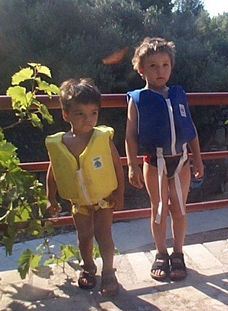

Croatia
We took August off and drove all the way to Croatia and the Pasic family beach house. Half way through, here's some scenery:
The family on a boat trip
Captain Izet and his merry band of sailors
Andy on Korcula, Marco Polo's home town

The town steps on Korcula
That family car was far too sensible...

Sailors